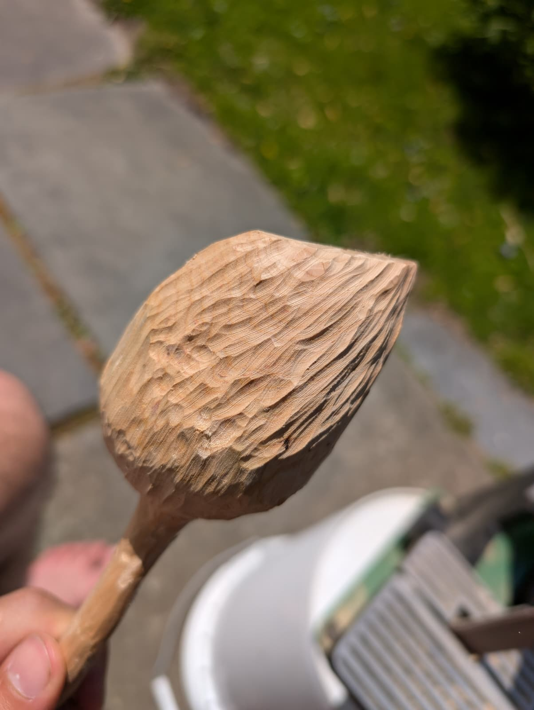
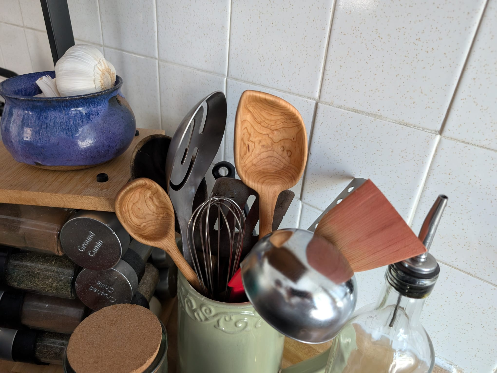
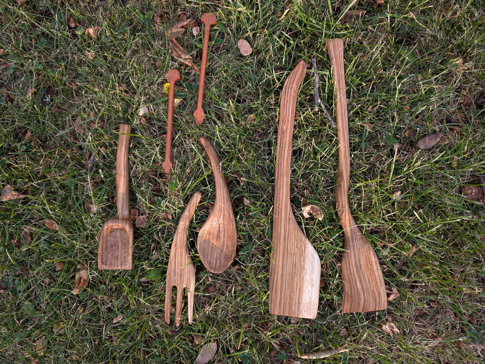
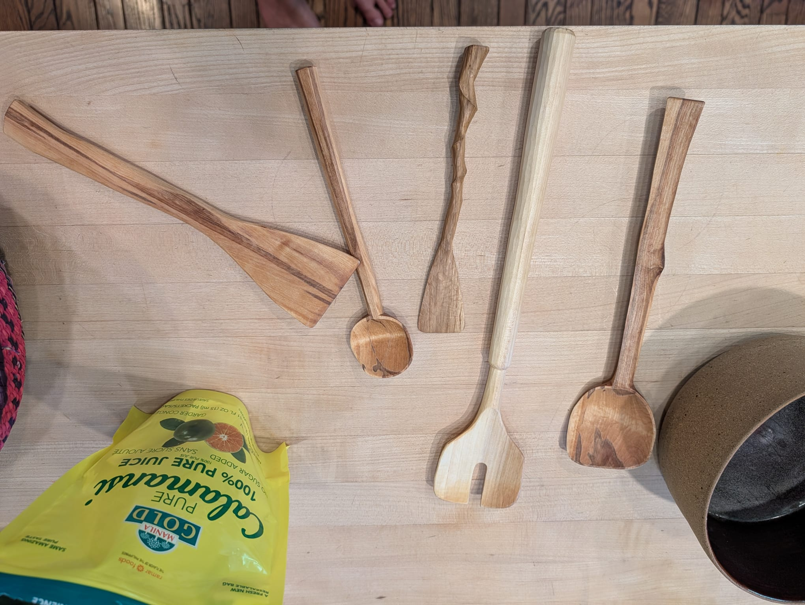

A wooden spoon is a timeless piece and need of people from many years.
Methods

I mainly carved this spoon splitting it with a custom blacksmithed froe to split, a small Norlund, and then mainly a rotary tool.
Purpose

I made these to gift some of the loved people I have in my life. They were generally happy.
Materials

Different woods affect the spoon making process and result greatly. Materials tend towards hard woods.
Inspiration

My inspiration for spoon carving is completely and totally my dear friend David Montgomery. He makes wonderful spoons and has learned lots of lessons that he shares with me. I am regularly giving him wood.
Different Finishes
To sand or to finish with the blade?
Future
I hope to carve spoons in a more traditional way, with froe, hatchet, sloyd, and curved knife.